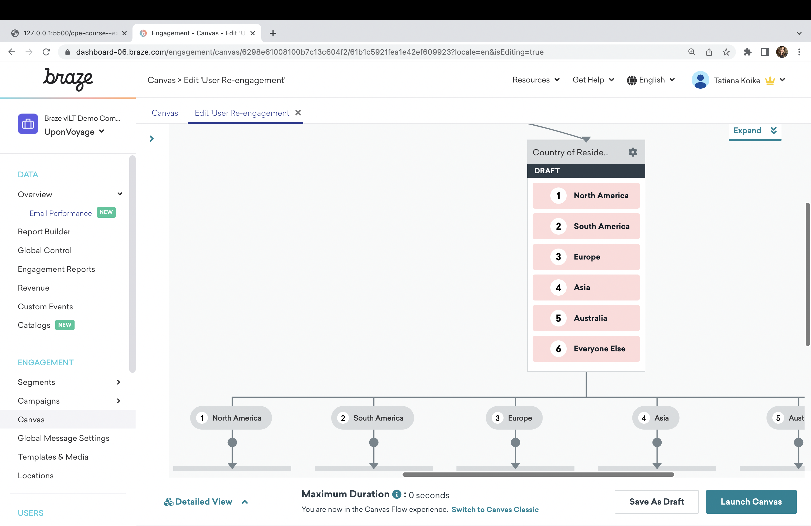

Key Takeaways
-
Audience Paths
With audience paths, you’ll send users down different journeys based on their attributes and preferences. You’ll define up to 7 audience groups. “Everyone Else” is an additional fallback group for any users who do not meet the criteria for the other groupings. -
Ranking
Audience paths rank your different groupings, so that if a user falls into multiple audience groups, they’ll go down the path designated as the highest priority.
Component Use Cases
Tailor messages to users based on their country of residency.

The Audience Paths component in action

Knowledge Check
Choose the best answer: If a user qualifies for every audience group in your audience paths component, they will proceed down: